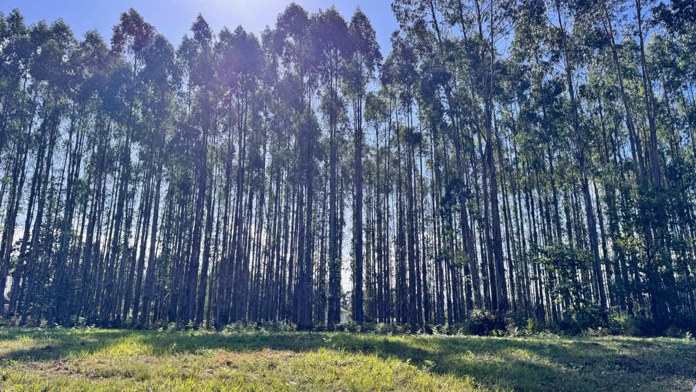
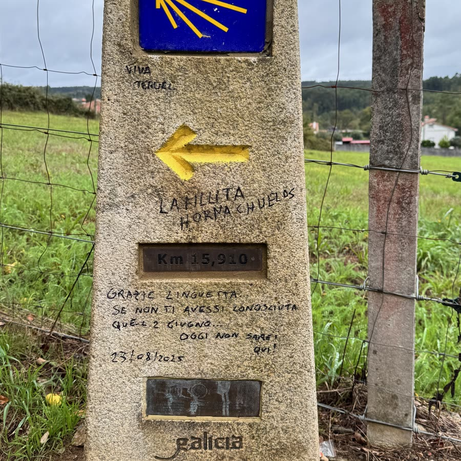
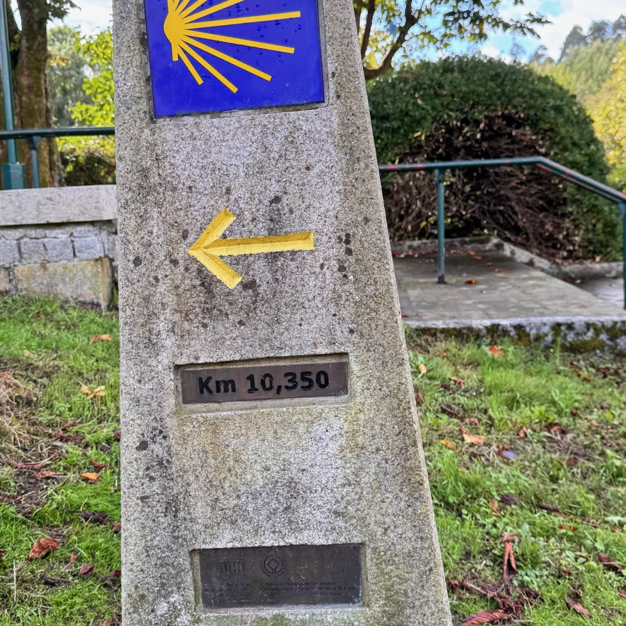
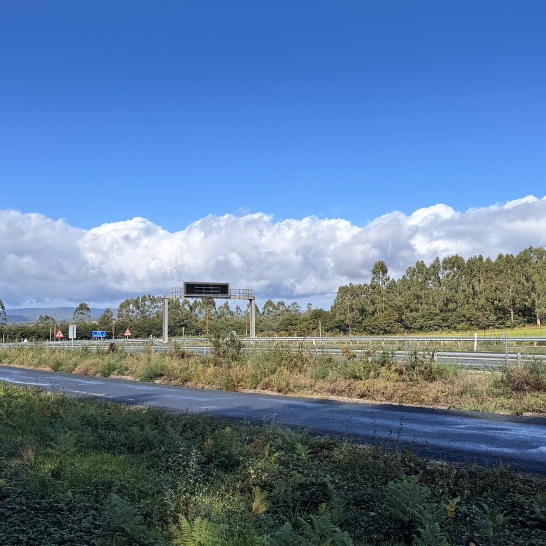
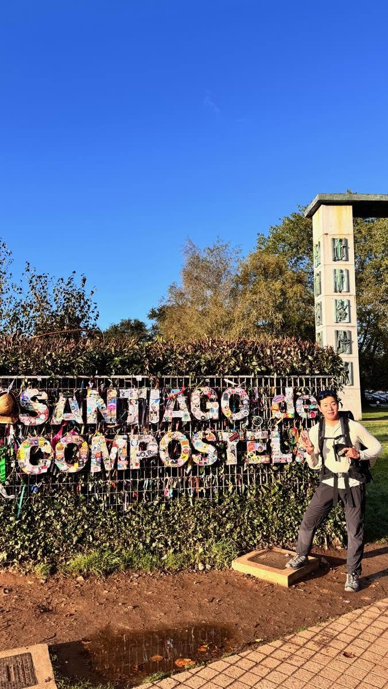
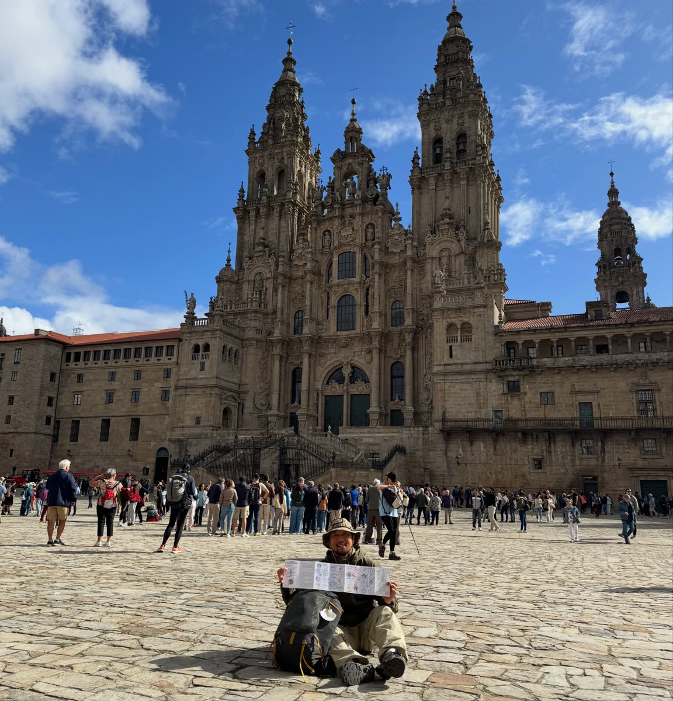
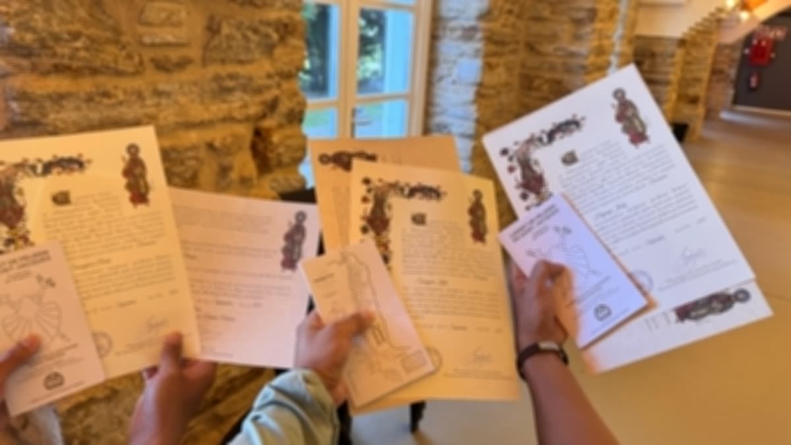
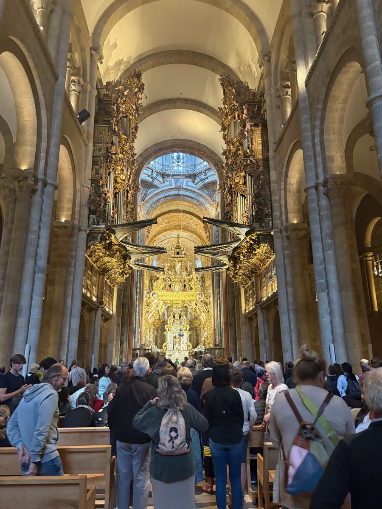

순례자의 한끼한밤
순례자의 한끼한밤
800km를 걸어 온 길,
마지막은 숲길이었다.
순례길 마지막 지방은 갈리시아다. 메세타의 누런 밀밭이 끝나고 나면 갑자기 초록색이 많아진다. 비가 자주 와서 길이 축축하고, 키 큰 유칼립투스 나무들이 숲을 이룬다. 나무가 하도 곧고 높아서 걷다가 자꾸 위를 올려다보게 된다.

갈리시아에 들어서면 길가 표지석에 남은 거리가 적혀 있다. 숫자가 하루하루 줄어드는 걸 보는 재미가 있다. 31일째 날 오후에 지난 표지석에는 10.350km라고 적혀 있었다. 32일 동안 걸어 온 거리를 생각하면, 이제 정말 코앞이다.



31일째 오후, 표지석에 남은 거리.
다음 날 아침이면 산티아고다.
산티아고 데 콤포스텔라
32일째 아침, 'SANTIAGO de COMPOSTELA'라고 쓰인 큰 글자판이 나왔다. 도시 입구다. 다들 여기서 한 장씩 사진을 찍는다. 우리도 찍었다.

글자판을 지나도 대성당까지는 한참 더 걸어야 한다. 돌길 골목을 따라 구시가지로 들어가면, 대성당 옆 아치 밑을 지나게 된다. 아치 밑은 소리가 울려서 분위기가 확 바뀐다. 소리를 켜고 보면 그 느낌이 조금 전해진다.
그리고 아치를 빠져나가면 오브라도이로 광장이다. 앞서 걷던 일행의 배낭을 따라 광장에 들어서자, 대성당이 한 번에 눈앞에 나타났다.
광장 바닥에는 배낭을 내려놓고 앉거나 아예 드러누운 순례자들이 가득했다. 다들 걸어 온 방향은 달라도, 도착해서 하는 행동은 비슷하다. 일단 앉는다. 그리고 대성당을 올려다본다.

순례자 증명서
광장 근처에는 순례자 사무소가 있다. 순례자 여권(크레덴시알)에 32일 동안 모은 도장을 보여 주면 증명서를 써 준다. 이 증명서를 '콤포스텔라'라고 부르는데, 마지막 100km 이상을 걸어서 온 사람이 받을 수 있다. 라틴어로 이름이 적혀 나온다. 걸어 온 거리가 적힌 증명서도 따로 받을 수 있다.

콤포스텔라를 받으려면
증명서를 받고 나서는 대성당 미사에 들어갔다. 안은 이미 사람으로 꽉 차 있었고, 맨 앞 제단이 온통 금빛이었다. 32일 동안 같은 방향으로 걸어 온 사람들이 한자리에 다 모인 것 같았다.

그런데, 진짜 끝은 아직
보통은 산티아고에서 순례가 끝난다. 그런데 우리는 그날 오후 바로 버스를 탔다. 서쪽으로 약 90km, 바다 앞 땅끝 마을 피스테라로. 옛날 사람들이 세상의 끝이라고 믿었던 곳이다. 거기서 본 0km 비석과 노을, 그리고 바닷가에 두고 온 운동화 이야기는 피스테라 0km 글에 적어 두었다.
32일째, 하루 동안
- 아침
마지막 숲길을 지나 산티아고 입구 글자판
- 오전
아치 밑을 지나 오브라도이로 광장, 대성당
- 오전
순례자 사무소에서 증명서 받기
- 점심 무렵
대성당 미사
- 오후
버스를 타고 땅끝 피스테라로
걸어서 도착한 곳은 산티아고,
끝난 곳은 피스테라였다.
🇬🇧 For pilgrims passing by
The last region of the Camino Francés is Galicia: green, often wet, with tall eucalyptus forests. Stone markers count down the distance; on the afternoon of day 31 ours read 10.350 km. On the morning of day 32 we passed the big "Santiago de Compostela" sign, walked through the old town and under the stone arch into Praza do Obradoiro, where pilgrims sit and lie on the ground in front of the cathedral. At the Pilgrim Office you can get the Compostela if you walked at least the last 100 km, proven by the stamps in your credential. After the cathedral Mass we took a bus that same afternoon to Fisterra, the old "end of the world", about 90 km to the west.
📚 참고한 자료
- 사진·영상: 2025년 9월 프랑스길에서 직접 찍은 것 (영상은 원래 소리 그대로)
- 콤포스텔라 조건(마지막 100km 이상 도보): 산티아고 순례자 사무소 안내
- 산티아고~피스테라 약 90km: 여러 순례 안내서 기준(86~91km)
🥾 순례길 32일 연재
- 1편 · 오늘 저녁은 뭘 먹지?
- 2편 · 오늘은 어디서 자지?
- 3편 · 피레네를 하루 만에 넘은 날
- 4편 · 밀밭에 20분 누워 있던 날
- 5편 · 산티아고에 도착한 아침 (지금 읽는 글)
- 6편 · 순례길 준비는 이렇게 했다
🕯️ 오늘 밤 이야기는 여기까지.
순례길의 진짜 마지막 날은 땅끝 피스테라에서 이어집니다.